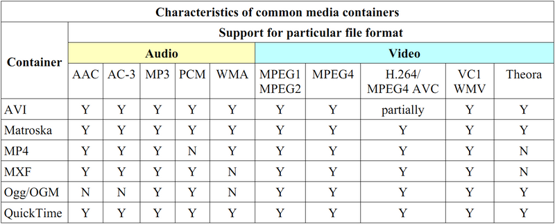

压制工具
请尽量在渲染输出时即达到上传要求，避免二压导致画质损失. 具体参数要求见工作流程-压制
可采用以下压制工具进行
由于前面提到的所有工具都是基于 FFmpeg 开发的，因此下面也介绍一下手动使用 FFmpeg 的相关知识
FFmpeg 入门
封装和编码

命令格式
ffmpeg -i [输入文件名] [参数选项] -f [格式] [输出文件]
样例
| ffmpeg -i | [输入文件] | [参数选项] | -f | [格式] | [输出文件] |
|---|---|---|---|---|---|
| ffmpeg -i | a.flv | -c:a copy -c:v copy | -f | mp4 | a.mp4 |
-c:a copy 表示 audio 编码不变，直接复制过去(copy) -c:v copy 表示 video 编码不变，直接复制过去(copy)
ffmpeg -i a.mp4 -i a.ass -c:a copy -vf ass=a.ass -f mp4 b.mp4
将视频文件 a.mp4 和字幕文件 a.ass 压制在一起，输出 b.mp4
参数说明
-c:a 同 -acodec，用于指定音频编码，copy原样拷贝、aacaac编码等等
-c:v 同 -vcodec，用于指定视频编码，copy原样拷贝、libx264h264编码等等
-vn 舍弃视频
-an 舍弃音频
-y 覆盖已有文件
-r 指定输出视频帧率
-b 设定输出码率， -b:v设置视频码率，-b:a设置音频码率
-crf 设定crf，默认值为23，详情见相关知识-压制-CRF
-preset 编码预设，选项有ultrafast superfast veryfast faster fast medium slow slower veryslow placebo，越慢视频输出质量越高，但是所需时间大幅增加
FFmpeg 不仅可以用于音视频编解码，还可以用于视频画面截取甚至视频制作生成，更多的说明请见官方文档